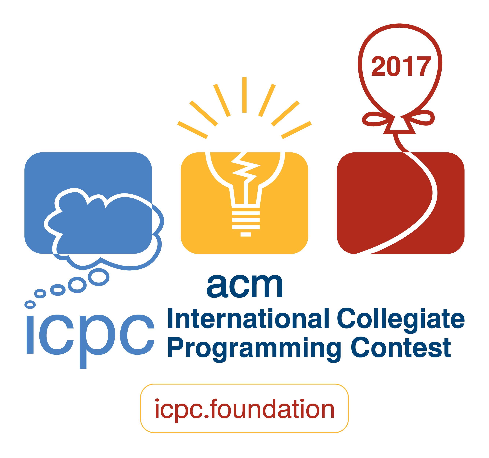

Primeira Fase: 12 de setembro de 2015
Final Brasileira: São Paulo, 13 e 14 de novembro de 2015
 Resultados Finais
Resultados Finais
A final brasileira de 2015 foi hospedada na Faculdade IBTA coordenada pela
Profa. Lucy Mai Tabuti. Abaixo a foto dos participantes no vão do
MASP, em São Paulo.

Logo depois disso a Maratona de Programação tomou a Avenida Paulista
em passeata.


Os problemas do warmup. Entradas e saídas tiveram os seguintes autores:
- A - The fellowship of the ring - Pablo Ariel Heiber
- B - The return of the King - Pablo Ariel Heiber
- C - Competition - Bruno Junqueira Adami
Os problemas da competição ( Entradas e saídas) tiveram os seguintes autores:
- A - At most twice - Pablo Ariel Heiber
- B - Blood groups - Guilherme Albuquerque Pinto
- C - Cake cut - Pablo Ariel Heiber
- D - D as in Daedalus - Guilherme Albuquerque Pinto
- E - Exposing Corruption - Walter Erquínio Pezo
- F - Fence the vegetables fail - Pablo Ariel Heiber
- G - Galaxy taxes - Rafael Armando Garcia Gomez
- H - Height map - Pablo Ariel Heiber
- I - Identifying tea - Inés Kereki
- J - Just a bit sorted - Jorge Enrique Moreira Broche
- K - Keep it energized - Fidel I. Schaposnik Massolo
O Comitê de seleção dos problemas foi formado por
Alejandro Strejilevich de Loma (sub-região Sul),
Guilherme Albuquerque Pinto (sub-região Brasil),
Nadia Paola Garcia Castellanos (sub-região México),
Pablo Ariel Heiber (co-coordenador),
Rafael Armando Garcia Gomes (sub-região Norte),
Ricardo Anido (coordenador), e
Yonny Mondelo Hernandez (sub-região Caribe).
O time campeão da Maratona de Programação 2015 foi o time
Turing Indecisos da Universidade
Federal de Pernambuco, formado
por Duhan Caraciolo, Mario Henrique e Gustavo Stor e pelo coach Israel
Silva. É a oitava vez
que a UFPE ganha a Maratona de Programação, e representará o Brasil em
uma final mundial pela décima primeira vez.
Os times que receberam medalhas foram:
- Medalha de ouro
- UFPE - Turing
Indecisos:
Duhan Caraciolo, Mario Henrique e Gustavo Stor,
coach Israel Silva. Classificado para a Final Mundial
- UFCG - Abella e os feras:
Felipe Abella de Souza, Árysson Figueiredo, Manoel
Lucas Lins,
coach Rohit Gheyi. Classificado para a Final Mundial
- USP-São Carlos -
Bob:
Tomás Raphael Fonseca, Bruno Sanches, Danilo Tedeschi,
coach Bianca Oe. Classificado para a Final Mundial
- Medalha de prata
- UFBA - Robério e seus
Teclados:
Guilherme Bernal, Roberto Caldeira, Jonathan Queiroz, coach
Mauricio Pamplona Segundo. Classificado para a Final Mundial
- USP-São Paulo - Sua
mãe :
Yan Couto, Giovana Delfino, Gabriel Fernandes, coach Renzo
Gomez. Classificado para a Final Mundial
- UFPE - Ballions :
Vítor Castelo Branco, Marlon Santos, José Rene
Santos Leite, coach Israel Silva.
- Medalha de bronze
- Unicamp -
BibleThump:
Augusto Morgan, Ivan Petrin, Tiago Reis, coach Fabio Usberti. Classificado para a Final Mundial
- UFMG - Starters Edition:
Lucas Maciel, Gabriel Poesia, Luiz Santos, coach Leonardo Martinez.
- ITA - Pgrnsue :
Caíque Lira, Luiz Ramos, Mateus Oliveira e coach Armando Gouveia.
- UFRN - Absurdo
Clássico: Missão Final :
Hugo cabral, Zailton Calheiros, Hélio Filho, coach
Sergio Medeiros.
O placar final da competição pode ser conferido
neste link.
Estatísticas.
Clarifications.
Runs.
Neste ano foram reconhecidos os campeões regionais:
Várias fotos e muito da festa estão disponíveis na página da Maratona no
Facebook.
Além da competição oficial houve uma "café
com leite" com a participação de 5 equipes. A equipe
campeã era formada por Stefano Tomasini, Marcos Kawakami e
Fernando Fonseca.
Os times classificados para a final mundial serão convidados a fazer o curso de treinamento que ocorrerá em
janeiro de 2016 na Unicamp.